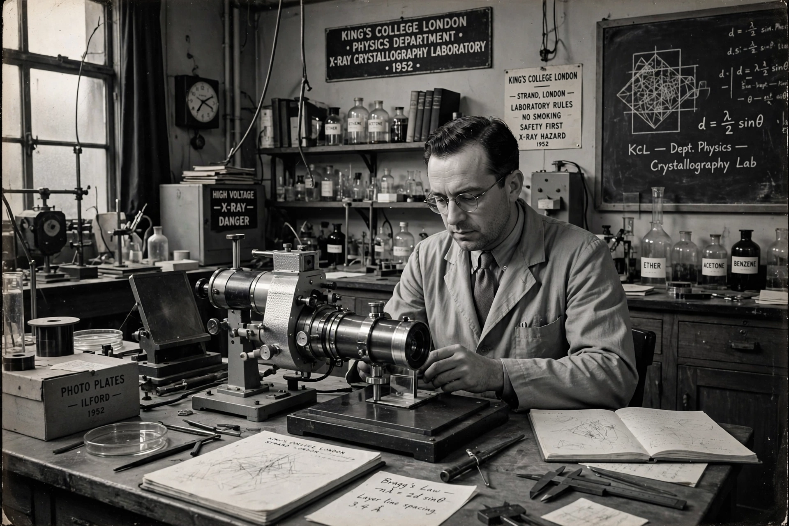

| Raymond Gosling | |
|---|---|
 Gosling at King's College London | |
| Born | 15 July 1926, Wembley, London, England |
| Died | 18 May 2015 (aged 88) |
| Fields | Physics, X-ray crystallography |
| Institutions | King's College London; University of the West Indies; Guy's Hospital |
| Known for | X-ray diffraction studies of DNA; Photo 51 |
Raymond George Gosling (15 July 1926 – 18 May 2015) was a British scientist who worked with Maurice Wilkins and Rosalind Franklin at King's College London on the X-ray diffraction studies that led to the discovery of the structure of DNA.
Gosling was born in Wembley in 1926 and studied physics at University College London, graduating in 1947. He worked at the Queen Elizabeth Hospital in Birmingham before joining King's College London in 1949, where he completed his PhD under Maurice Wilkins in the Medical Research Council Biophysics Unit directed by John Randall.
Together with Wilkins, Gosling obtained the first X-ray diffraction patterns of DNA in 1950, demonstrating that DNA fibres could produce crystalline patterns. When Rosalind Franklin joined the unit in 1951, Gosling was assigned to work with her. The two refined the technique of X-ray fibre diffraction, keeping the DNA fibres hydrated inside a specially adapted camera; their work produced the famous Photo 51, the exceptionally clear diffraction image of the B form of DNA taken in May 1952. Franklin and Gosling published the evidence for the helical structure in Nature in April 1953, in the same issue as the Watson and Crick model paper, and Gosling co-authored a further paper with Franklin on the A-to-B transition in DNA.
After completing his thesis, Gosling lectured in physics at Queen's College, Dundee, and at the University of the West Indies in Jamaica, before returning to London to work in medical physics at Guy's Hospital, where he spent the rest of his career applying physics to medicine, including work on blood flow and medical imaging. He remained a modest and frequently overlooked figure in accounts of the DNA story and advocated for proper recognition of Franklin's contribution. He died in 2015, aged 88.
Categories: 1926 births · 2015 deaths · British physicists · DNA researchers